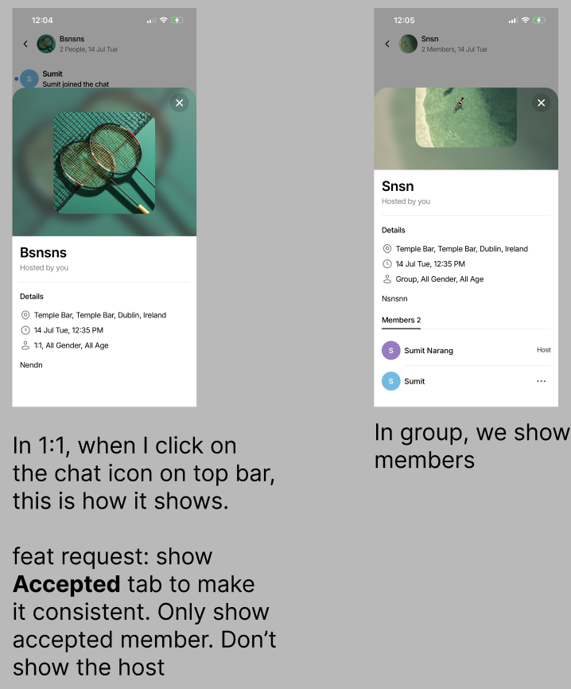
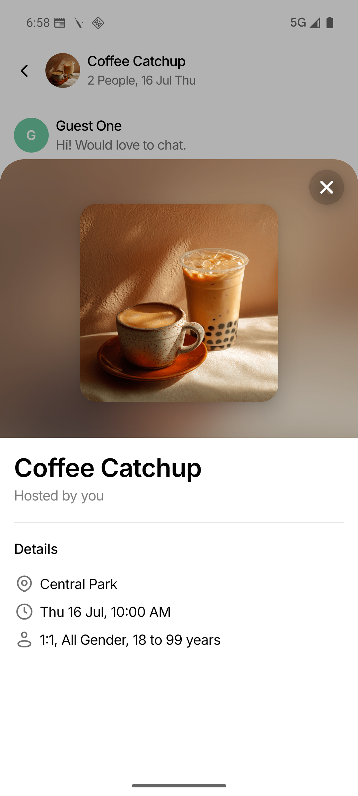

Same presentation
The new state goes through EventDetailsMembers, using the same static
tab, divider, EventMemberRow, separators, avatar, and more-actions
affordance as the group roster.
The 1:1 host overlay now uses the same roster design as a group event overlay. It shows approved requesters under an Accepted tab, keeps the existing member action menu, and deliberately excludes the host.
The change stays inside the existing Event Details feature and reuses its shared overlay primitives. No new visual tokens or one-off row styles were introduced.
The new state goes through EventDetailsMembers, using the same static
tab, divider, EventMemberRow, separators, avatar, and more-actions
affordance as the group roster.
The list is built from approved join-request requesters, not the active private conversation. That supports every accepted person across separate 1:1 chats and excludes the host by construction.
Read-only 1:1 host overlays now refresh requests with
includeApproved: true. The existing host-only endpoint and event-scoped
cache are reused, so no server work was required.
This is the existing group-event overlay used as the design source for the new 1:1 Accepted state. Select the screenshot to open the complete original reference.

The implementation reuses this exact overlay structure. The 1:1 version changes the tab label to Accepted and removes the host row, while keeping the roster spacing, divider, avatar row, and member action affordance consistent.
Both comparisons follow the same flow: Chat → 1:1 event → event header → details overlay. Select any screenshot to view it at full resolution.

The 1:1 overlay has no accepted roster while the accepted user is visible behind it.
Composes the new accepted overlay only for a host-owned 1:1 event, passing approved requesters into the shared roster surface.
Adds an accepted variant while sharing the group overlay’s structure and
styles. It changes only the label, empty copy, host marker, and menu eligibility.
Permits approved-request refreshes for the otherwise read-only 1:1 overlay, including cold navigation where no request cache has been populated yet.
Covers approved members, host exclusion, action-menu presence, empty state, cold-data refresh, and unchanged group behavior.
npm run typecheck and Prettier checks completed successfully.
Lint exited successfully with the repository’s documented warning baseline (899 warnings); this change introduced no lint errors.
{kind=link}
{kind=link}
{kind=link}
{kind=link}
{kind=link}